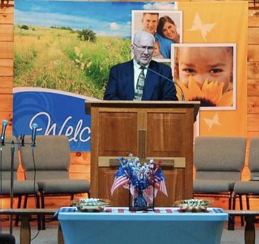

About

Pastor Raymond Purdy is the pastor of Living Word Baptist Church in Sweet Valley, PA, and the voice of LWBC Let’s Connect. The podcast is produced by the LWBC Media Ministry.
LWBC Let’s Connect brings the preaching and teaching of Living Word Baptist Church to anyone, anywhere. Most episodes are Pastor Raymond Purdy’s messages from the pulpit, recorded and released so that a missed Sunday doesn’t have to mean a missed message — and so that people who have never set foot in Sweet Valley can hear the same Word preached the same way.
The show’s tagline says what it is: faith, truth, real talk, real life. Scripture is opened and taken at its word. Hard things are said plainly. And every message lands somewhere practical, because a sermon that stays in the sanctuary hasn’t finished its job.
Let’s Connect is part of the LWBC Media Ministry, which also produces The Question Mark Podcast with Gordon Conger and the church’s livestream.